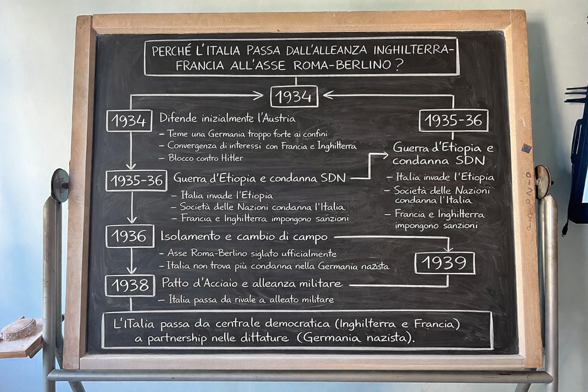

Tocca la copertina per aprire la lezione.

Percorso cronologico 1919→1939
Focus: perché l’Italia cambia alleanze?
Approfondimenti a finestre
Obiettivo: capire come la crisi del primo dopoguerra e le scelte degli anni Trenta portano l’Italia dal rapporto con Francia e Regno Unito alla collaborazione con la Germania nazista, fino all’alleanza militare.